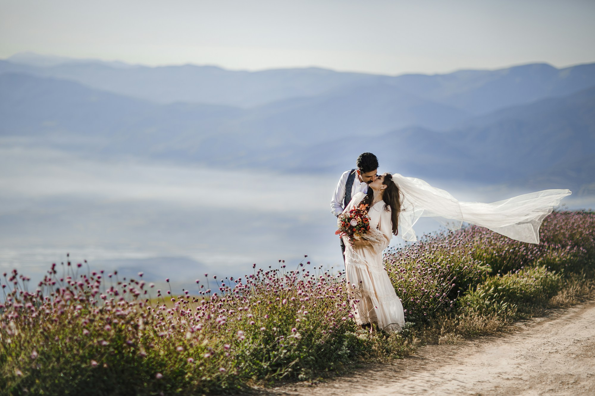
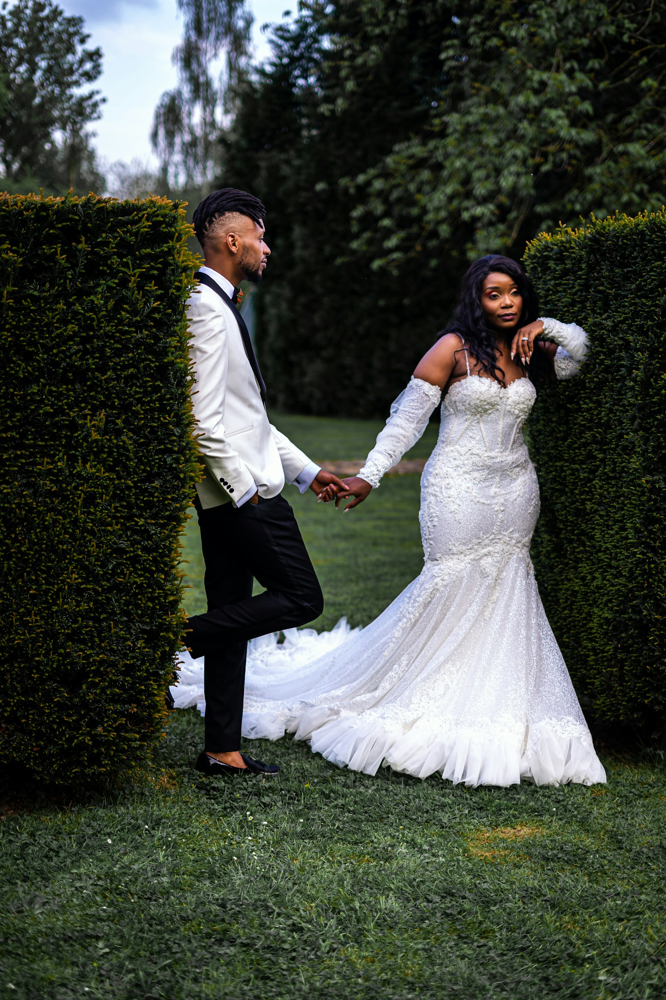
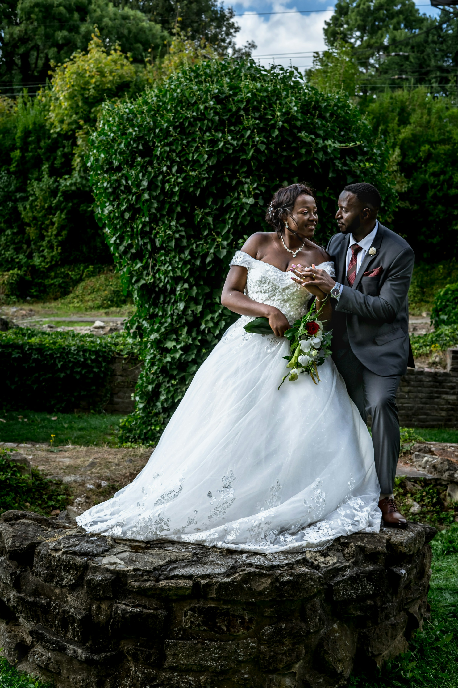

The big celebration and the small things happening around it. Thoughtful coverage that gives you space to be present, with gentle direction when you need it.
Tell us about your day ↗
Weddings · Couples · EditorialA considered perspective.
The day passes.
The feeling stays.
The Ori perspective
Honest moments.
Artfully remembered.
A photograph should bring you back to how it felt. The full-hearted laughter. The nervous hands. The quiet before everything changes.
We make room for those moments, pairing an observant eye with thoughtful direction. Images with the beauty of an editorial and the warmth of your real life.
Our approach↗ A visual collection
Some things
are better felt.
Connection, in all its forms.
Take a closer look.
Showing 6 visual stories
What we make
Room for the real.
An eye for the beautiful.
Three ways to tell a story.
The same care in every frame.
Just the two of you, somewhere that feels like you. From an engagement to an ordinary afternoon worth remembering, we’ll follow your connection.
Plan a session ↗A little intention. A lot of personality. Portraits shaped around your presence, with considered light and a clear creative direction.
Make a portrait ↗
The experience
Less performing.
More being there.
A thoughtful process, so you can
settle into the moment.
01Before the camera
Start with a conversation.
Tell us who you are, what you’re planning, and what matters most. We’ll shape a direction around your story.
02Inside the moment
Be wonderfully yourself.
Room to move, laugh, and feel. A little guidance when it helps, and a watchful eye for everything that happens naturally.
03Long after the day
Return to the feeling.
A considered collection of images that holds the atmosphere, the people, and the details you never want to forget.

Sample photography by Christophe Dusabe Notes for the journey
A little perspective.
Thoughts to help you feel more
at home in front of the camera.
We’re camera shy. Is that okay?+
Absolutely. You don’t need to arrive with poses or a performance. We’ll talk through what feels comfortable, give simple direction, and leave room for natural moments.
What should we include in our enquiry?+
Share your date or a rough timeframe, your location, the type of photography you have in mind, and anything you’d love us to know. It’s okay if the plans are still taking shape.
How do we choose a collection?+
Start with your priorities: the people, the moments, and the time you want covered. Scope, deliverables, and pricing should be confirmed in a personalised proposal before you book.
Can we plan something a little different?+
Tell us your idea. A meaningful place, a different kind of celebration, or a portrait with a point of view is a good starting point for a creative conversation.
Your story starts here
Tell us what
you’re dreaming of.
A day. A person. A feeling.
We’d love to hear what you have in mind.
A little about you